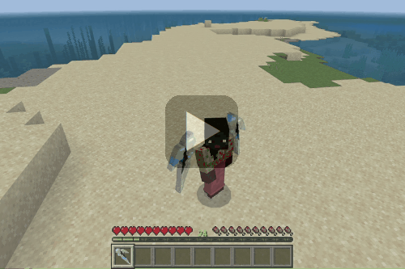
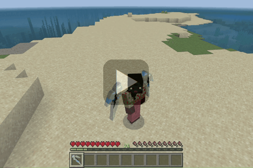
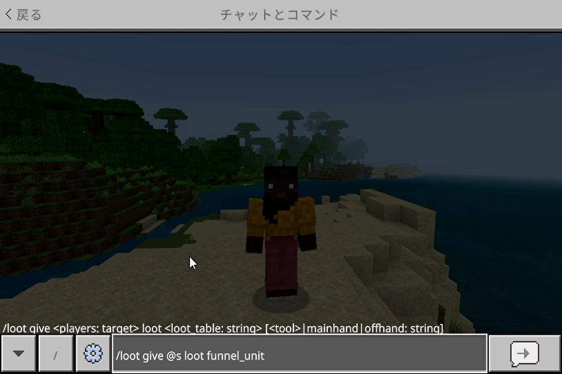
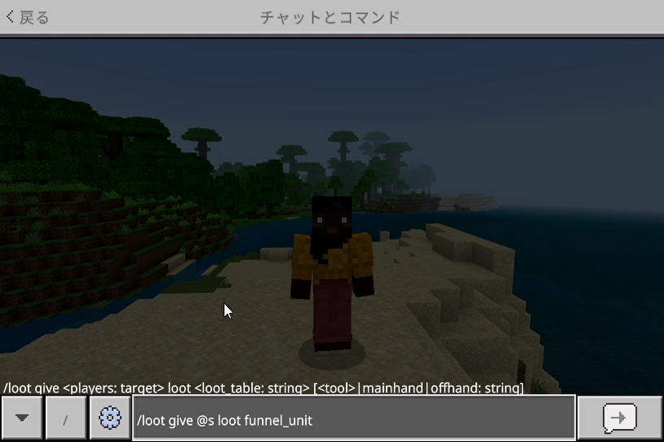

【ファンネルユニット】
はじめに
今回のアイテムはメインハンド装備ですが、Ｇシリーズでのとあるモビルスーツのバインダーを参考に３Ｄ風の２Ｄでアレンジしています。
マインクラフトのキャラクターは元々等身が低いのでＳＤ風に仕上がりました。
ファンネルユニットを装備した状態で右クリックすると以下のように１機ずつ召喚し、合計６機まで射出する事が可能です。

マインクラフトのキャラクターは元々等身が低いのでＳＤ風に仕上がりました。
ファンネルユニットを装備した状態で右クリックすると以下のように１機ずつ召喚し、合計６機まで射出する事が可能です。

メッセージの種類
６機を超えて射出しようとすると以下のようにウィスパーを通して天の声が流れます。
▶スウィープロッドの実装時に使っていた「ダッシュ＋スニーク」を実行すると、場に出ているファンネルを全て回収後以下のようにウィスパーを通して天の声が流れます。
ファンネルが場に存在しない状態で「ダッシュ＋スニーク」を実行すると以下のように表示されます。
▶スウィープロッドの実装時に使っていた「ダッシュ＋スニーク」を実行すると、場に出ているファンネルを全て回収後以下のようにウィスパーを通して天の声が流れます。
ファンネルが場に存在しない状態で「ダッシュ＋スニーク」を実行すると以下のように表示されます。
ユースケース
今回は▶光の剣のライトシールドからライトバレットをオートで発射していたエンティティをベースにしてファンネルを実装しています。
本来のファンネルは宇宙空間でしか使えませんが、エンティティのＡＩ機能に飛行機能を拡張する事によって以下のようなオールレンジ攻撃を可能にしました。
▼空中戦
ヴェックスのような飛行タイプの相手であれば空中戦で威力を発揮します。
▼水中戦
モビルアーマーのように水中を突進してくるドラウンドに対しても迎撃してくれます。
▼対ウォーデン
ファンネルが放つライトバレットの威力は矢と同等ですが相手の注意を引きながら複数機によるオールレンジ攻撃を行い、上の画面のようにサンドバック状態にできるので効果は抜群です。
ウォーデンの認識範囲である３０ブロック分のスペースが確保できるのであれば、ファンネルを放った後すぐに離れて認識範囲外へ退避しましょう。
範囲外へ出れば暗視状態も解除されるので、後の事はファンネルに任せて高みの見物ができます。
ウォーデンは体力が少なくなると、どんな状況でもプレイヤーに急接近して近接攻撃をしかけてきます。
この時、攻撃のスキも与えないくらいに連続攻撃をしかけてくるので認識範囲外に逃れておくのが懸命でしょう。
本来のファンネルは宇宙空間でしか使えませんが、エンティティのＡＩ機能に飛行機能を拡張する事によって以下のようなオールレンジ攻撃を可能にしました。
▼空中戦
ヴェックスのような飛行タイプの相手であれば空中戦で威力を発揮します。
▼水中戦
モビルアーマーのように水中を突進してくるドラウンドに対しても迎撃してくれます。
▼対ウォーデン
ファンネルが放つライトバレットの威力は矢と同等ですが相手の注意を引きながら複数機によるオールレンジ攻撃を行い、上の画面のようにサンドバック状態にできるので効果は抜群です。
ウォーデンの認識範囲である３０ブロック分のスペースが確保できるのであれば、ファンネルを放った後すぐに離れて認識範囲外へ退避しましょう。
範囲外へ出れば暗視状態も解除されるので、後の事はファンネルに任せて高みの見物ができます。
ウォーデンは体力が少なくなると、どんな状況でもプレイヤーに急接近して近接攻撃をしかけてきます。
この時、攻撃のスキも与えないくらいに連続攻撃をしかけてくるので認識範囲外に逃れておくのが懸命でしょう。
「ファンネルユニット」の取得
本環境のビヘイビアパック／リソースパックを含めたアドオンパックを適用しておけば、以下の方法で「ファンネルユニット」が手に入ります。

※「Ｇ合金」は釣りでのジャンク品として登録しています。ジャンク品の登録方法については▶釣りアイテム（junk.jsonの定義）のページをご覧ください。
※「サイコフレーム」は武器鍛冶師との取引で手に入ります。
▼レシピパターン
▶ネットショップ
※▶召雷の魔石実装時と同じようにWebsocketサーバーを介したネットショップとの接続中は発射できないようにしています。

クラフトする場合
▼必要な素材※「Ｇ合金」は釣りでのジャンク品として登録しています。ジャンク品の登録方法については▶釣りアイテム（junk.jsonの定義）のページをご覧ください。
※「サイコフレーム」は武器鍛冶師との取引で手に入ります。
▼レシピパターン
ショップで購入する場合
以下のショップで購入できます。▶ネットショップ
※▶召雷の魔石実装時と同じようにWebsocketサーバーを介したネットショップとの接続中は発射できないようにしています。
コマンドで取得する場合
以下はワールドオーナーやシステム組み込み用としてコマンドで取得する方法です。
おわりに
ファンネルを場に出しておくと、プレイヤーの目が届かない所でも目を光らせてくれると同時に空中戦でも能力を発揮できるので心強い相棒になります。
今回は▶発射アイテムとしてのファンネルユニットを実装後、▶ダミーエンティティを作成して▶発射体エンティティとして発射する事によりサーバーサイドでイベント検知を行っています。
また、マインクラフトユーザー名をタグとして付与すると同時に、ファンネルの召喚／回収の制御も併せてサーバーサイドがメインで行う事によって他のプレイヤーのものと競合が起こらないように配慮しています。
場に出せるファンネル数を含めた各種設定項目については▶設定ファイルで変更可能です。
今回は▶発射アイテムとしてのファンネルユニットを実装後、▶ダミーエンティティを作成して▶発射体エンティティとして発射する事によりサーバーサイドでイベント検知を行っています。
また、マインクラフトユーザー名をタグとして付与すると同時に、ファンネルの召喚／回収の制御も併せてサーバーサイドがメインで行う事によって他のプレイヤーのものと競合が起こらないように配慮しています。
場に出せるファンネル数を含めた各種設定項目については▶設定ファイルで変更可能です。